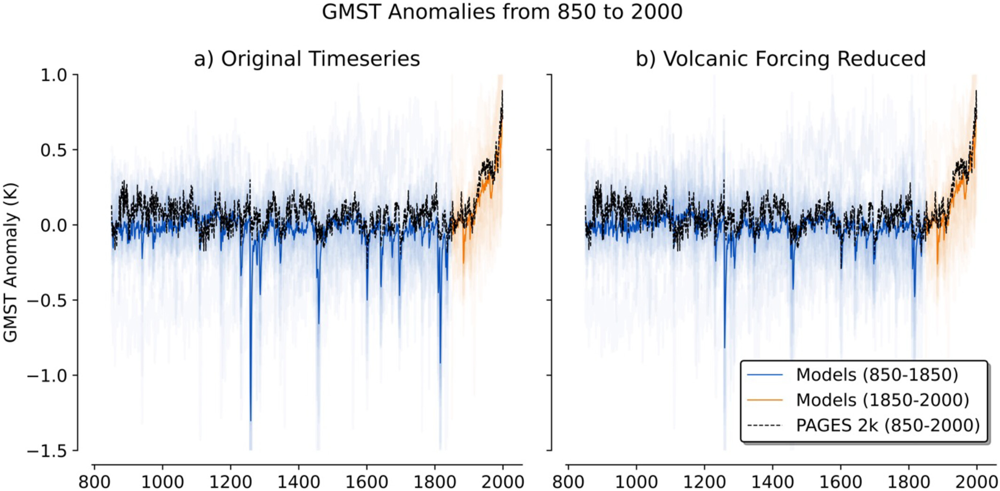
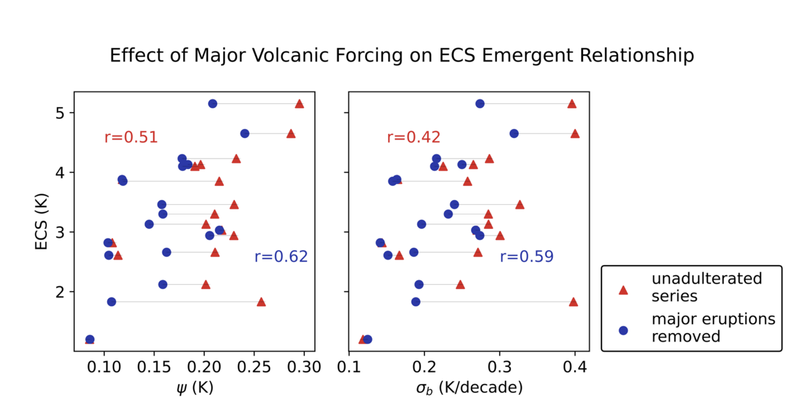
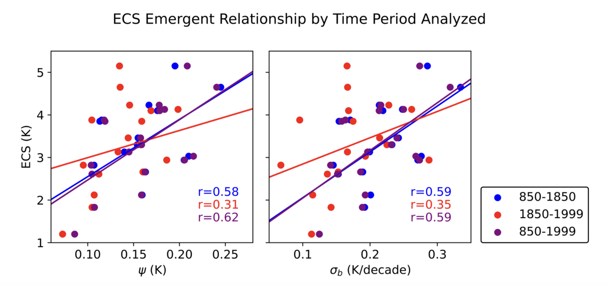

Data and Methods#
Last Millennium Global Mean Surface Temperature Data#
To get the GMST record from 850 to 1999, we combine a set of 18 climate model simulations that cover CMIP5 and CMIP6:
CMIP5#
(1) ACCESS1-0 |
(2) ACCESS1-3 |
(3) CCSM4 |
(4) CNRM-CM5 |
(5) CSIRO-Mk3-6-0 |
(6) CanESM2 |
(7) GISS-E2-H |
(8) GISS-E2-R |
(13) HadGEM2-ES |
(14) IPSL-CM5A-LR |
(15) IPSL-CM5A-MR |
(16) IPSL-CM5B-LR |
(17) MIROC-ESM |
(18) MIROC5 |
(19) MPI-ESM-LR |
(20) MPI-ESM-MR |
(21) MRI-CGCM3 |
(22) NorESM1-M |
(23) bcc-csm1-1 |
(24) inmcm4 |
CMIP6#
(1) ACCESS-CM2 |
(2) ACCESS-ESM1-5 |
(3) AWI-CM-1-1-MR |
(4) BCC-CSM2-MR |
(5) BCC-ESM1 |
(6) CAMS-CSM1-0 |
(7) CAS-ESM2-0 |
(8) CESM2 |
(9) CESM2-WACCM |
(10) CMCC-CM2-SR5 |
(11) CMCC-CM6-1 |
(12) CMCC-CM6-1-HR |
(13) CNRM-ESM2-1 |
(14) CanESM5 |
(15) E3SM-1-0 |
(16) EC-Earth3-Veg |
(17) FGOALS-f3-L |
(18) FGOALS-g3 |
(19) GISS-E2-1-G |
(20) GISS-E2-1-H |
(21) HadGEM3-GC31-LL |
(22) HadGEM3-GC31-MM |
(23) INM-CM4-8 |
(24) INM-CM5-0 |
(25) IPSL-CM6A-LR |
(26) KACE-1-0-G |
(27) MIROC-ES2L |
(28) MIROC6 |
(29) MPI-ESM1-2-HAM |
(30) MPI-ESM1-2-HR |
(31) MPI-ESM1-2-LR |
(32) MRI-ESM2-0 |
(33) NESM3 |
(34) NorCPM1 |
(35) NorESM2-LM |
(36) NorESM2-MM |
(37) SAM0-UNICON |
(38) TaiESM1 |
(39) UKESM1-0-LL |
for all of these models, the historical and past1000 experiments are publicly available, providing a 1,150-year record that can be “stitched” together out of these two experiments (850-1999). To compare these models to some form of observational data, we rely on proxy data (e.g., tree rings, corals, and other paleoclimate records) that is converted to GMST estimates using data assimilation–a project known as the PAGES 2k dataset. In fact, Figure 2 shows how the multi-model mean compares to one of the reconstruction methods (PCR) for both pre-industrial (850–1849) and historical (1850–1999) periods. Panel (a) shows the original temperature timeseries, while panel (b) shows the timeseries after adjusting for volcanic forcing:

You may have noticed something strange with this figure, though. Why are there so many strong “dips” in the simulations that don’t show up in the paleoclimate record? Well, it turns out that the impact of volcanic eruptions on GMST is likely to be systemically over-represented in climate models, an issue that was identified well before our investigation. So, to help correct for this effect, we regressed out major volcanic forcing signals, which improved the correlation between our temperature variability metric (Psi) and ECS.

We also wanted to see whether excluding the historical period would impact our emergent relationship, as previous literature suggests that excluding historical forcing may dilute the Cox et al. emergent constraint. We did not find evidence of such a dilution in our work:

Calculating Temperature Variability Metrics and ECS#
Two key metrics are used:
Interannual variability (ψ): Combines the standard deviation of GMST with the 1-year autocorrelation.
Decadal trend variability (σb): Measures how much the 10-year trend in GMST fluctuates over time.
They obtain ECS values for each model mostly from Zelinka et al. (2020), using the abrupt-4×CO₂ experiment and Gregory methodology. Some ECS data also come from other publications if not in Zelinka et al., which are shown here:
Model |
Gen. |
ECS (Source) |
Volcanic Forcing |
OOS? |
|---|---|---|---|---|
bcc-csm1-1 |
5 |
2.82 (Zelinka et al., 2020) |
Gao et al. (2008) |
No |
CCSM4 |
5 |
2.94 (Zelinka et al., 2020) |
Gao et al. (2008) |
No |
CSIRO-Mk3L-1-2 |
5 |
3.85 (Phipps et al., 2012) |
Crowley et al. (2008) |
Yes |
FGOALS-gl |
5 |
1.2 (Zhang et al., 2013) |
Crowley (2000) |
Yes |
GISS-E2-R |
5 |
2.12 (Zelinka et al., 2020) |
Toohey & Sigl (2017) |
No |
HadCM3 |
5 |
3.30 (Randall et al., 2007) |
Crowley et al. (2008) |
Yes |
IPSL-CM5A-LR |
5 |
4.13 (Zelinka et al., 2020) |
Gao et al. (2008) |
No |
MIROC-ES2L |
6 |
2.66 (Zelinka et al., 2020) |
Toohey & Sigl (2017) |
No |
MPI-ESM-P |
5 |
3.46 (Zelinka et al., 2020) |
Crowley et al. (2008) |
Yes |
MRI-CGCM3 |
5 |
2.61 (Zelinka et al., 2020) |
Gao et al. (2008) |
No |
MRI-ESM2-0 |
6 |
3.13 (Zelinka et al., 2020) |
Toohey & Sigl (2017) |
No |
CESM1-LME (001) |
N/A |
4.10 (Meehl et al., 2013) |
Gao et al. (2008) |
Yes |
CESM2 |
6 |
5.15 (Zelinka et al., 2020) |
Toohey & Sigl (2017) |
No |
MPI-ESM1-2-LR |
6 |
3.03 (Zelinka et al., 2020) |
Toohey & Sigl (2017) |
No |
EC-Earth3-Veg-LR |
6 |
4.23 (Zelinka et al., 2020) |
Toohey & Sigl (2017) |
Yes |
MIROC-ESM |
5 |
4.65 (Zelinka et al., 2020) |
Crowley et al. (2008) |
No |
INM-CM4-8 |
6 |
1.83 (Zelinka et al., 2020) |
Toohey & Sigl (2017) |
No |
ACCESS-ESM1-5 |
6 |
3.88 (Zelinka et al., 2020) |
Toohey & Sigl (2017) |
Yes |
The table lists the climate models we analyzed here, their generation (CMIP5 or CMIP6), their Equilibrium Climate Sensitivity (ECS) values, and shows the volcanic forcing dataset used in each model’s simulations–which is what we use to “regress out” the volcanic forcing profile. Finally, the table indicates whether a model was included in previous studies or is considered “out of sample” (OOS), which helps us get a sense of the degree to which our ensemble is independent of previous analysis.
Statistical Framework for Constraining ECS#
We used the Hierarchical Emergent Constraint approach proposed by Bowman et al. (2018), which accounts for uncertainties like observational noise and also the correlation strength of the emergent relationship, to constrain ECS.